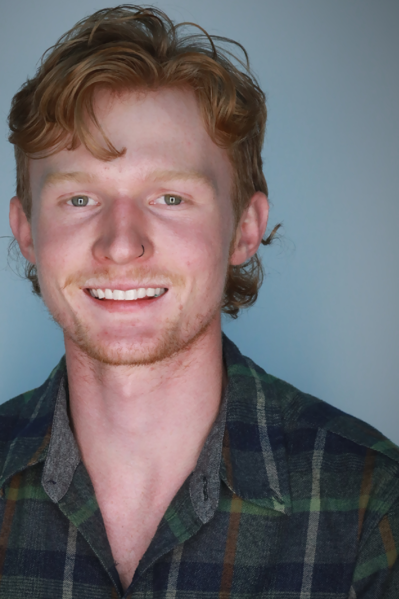

Wolfgang Loudenburg
Universal Design Class Portal
About me...
I'm a student at CU Boulder, studying creative technology and design, with both front end and back end development skills. My minor is in creative technology & design, where I gained profficeny in both Adobe & Microsoft suite. I work as a bootfitter, helping people find the skis &ski boots that best fit their needs while spending as much time as possible in the great outdoors.
In the winter you can find me throughout the Rocky Mountains, crushing powder pillows whenever possible. In the Summer I'm often guiding groups of friends and strangers a like through gnarly rapids, always chasing the greasiest of lines.